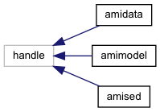
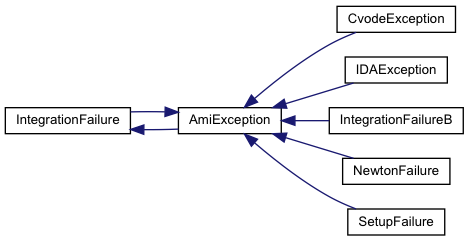
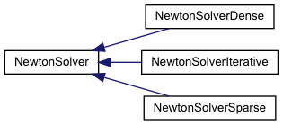

AMICI
Advanced Multilanguage Interface for CVODES and IDAS
Class Hierarchy
Go to the textual class hierarchy



Generated on Wed Sep 26 2018 22:28:02 for AMICI by
1.8.14
 1.8.14 1.8.14
1.8.14 1.8.14